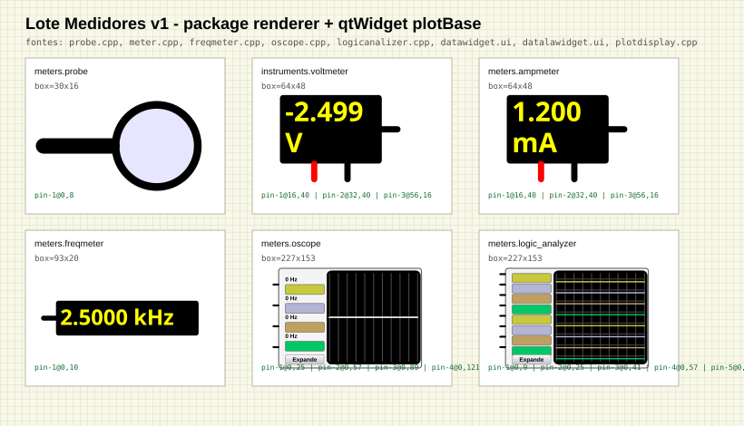

Gerado a partir do renderer compilado da extensao. Teste executado: npm --prefix extension test.

| Componente | Status | Fonte SimulIDE | Box | Pinos | Checks |
|---|---|---|---|---|---|
meters.probe |
simulidePaint | src/components/meters/probe.cpp |
{"width":30,"height":16} |
[{"id":"pin-1","aliases":["inpin"],"position":{"x":0,"y":8},"real":true}] |
{"usesPackageRenderer":true,"hasSimulidePaint":true,"hasQtWidget":false,"hasMultilineText":false,"hasAllRealPinPositions":true,"hasBlackBodyOrPlot":false,"hasUbuntuMono":false,"hasPlotBaseButton":false} |
instruments.voltmeter |
simulidePaint | src/components/meters/meter.cpp + voltmeter.cpp |
{"width":64,"height":48} |
[{"id":"pin-1","aliases":["lPin"],"position":{"x":16,"y":40},"real":true},{"id":"pin-2","aliases":["rPin"],"position":{"x":32,"y":40},"real":true},{"id":"pin-3","aliases":["outnod"],"position":{"x":56,"y":16},"real":true}] |
{"usesPackageRenderer":true,"hasSimulidePaint":true,"hasQtWidget":false,"hasMultilineText":true,"hasAllRealPinPositions":true,"hasBlackBodyOrPlot":true,"hasUbuntuMono":true,"hasPlotBaseButton":false} |
meters.ampmeter |
simulidePaint | src/components/meters/meter.cpp + ampmeter.cpp |
{"width":64,"height":48} |
[{"id":"pin-1","aliases":["lPin"],"position":{"x":16,"y":40},"real":true},{"id":"pin-2","aliases":["rPin"],"position":{"x":32,"y":40},"real":true},{"id":"pin-3","aliases":["outnod"],"position":{"x":56,"y":16},"real":true}] |
{"usesPackageRenderer":true,"hasSimulidePaint":true,"hasQtWidget":false,"hasMultilineText":true,"hasAllRealPinPositions":true,"hasBlackBodyOrPlot":true,"hasUbuntuMono":true,"hasPlotBaseButton":false} |
meters.freqmeter |
simulidePaint | src/components/meters/freqmeter.cpp |
{"width":93,"height":20} |
[{"id":"pin-1","aliases":["lPin"],"position":{"x":0,"y":10},"real":true}] |
{"usesPackageRenderer":true,"hasSimulidePaint":true,"hasQtWidget":false,"hasMultilineText":false,"hasAllRealPinPositions":true,"hasBlackBodyOrPlot":true,"hasUbuntuMono":true,"hasPlotBaseButton":false} |
meters.oscope |
qtWidget | src/components/meters/oscope.cpp + src/gui/dataplotwidget/datawidget.ui + plotdisplay.cpp |
{"width":227,"height":153} |
[{"id":"pin-1","aliases":["Pin0"],"position":{"x":0,"y":25},"real":true},{"id":"pin-2","aliases":["Pin1"],"position":{"x":0,"y":57},"real":true},{"id":"pin-3","aliases":["Pin2"],"position":{"x":0,"y":89},"real":true},{"id":"pin-4","aliases":["Pin3"],"position":{"x":0,"y":121},"real":true}] |
{"usesPackageRenderer":true,"hasSimulidePaint":false,"hasQtWidget":true,"hasMultilineText":false,"hasAllRealPinPositions":true,"hasBlackBodyOrPlot":true,"hasUbuntuMono":false,"hasPlotBaseButton":true} |
meters.logic_analyzer |
qtWidget | src/components/meters/logicanalizer.cpp + src/gui/dataplotwidget/datalawidget.ui + plotdisplay.cpp |
{"width":227,"height":153} |
[{"id":"pin-1","aliases":["Pin0"],"position":{"x":0,"y":9},"real":true},{"id":"pin-2","aliases":["Pin1"],"position":{"x":0,"y":25},"real":true},{"id":"pin-3","aliases":["Pin2"],"position":{"x":0,"y":41},"real":true},{"id":"pin-4","aliases":["Pin3"],"position":{"x":0,"y":57},"real":true},{"id":"pin-5","aliases":["Pin4"],"position":{"x":0,"y":73},"real":true},{"id":"pin-6","aliases":["Pin5"],"position":{"x":0,"y":89},"real":true},{"id":"pin-7","aliases":["Pin6"],"position":{"x":0,"y":105},"real":true},{"id":"pin-8","aliases":["Pin7"],"position":{"x":0,"y":121},"real":true}] |
{"usesPackageRenderer":true,"hasSimulidePaint":false,"hasQtWidget":true,"hasMultilineText":false,"hasAllRealPinPositions":true,"hasBlackBodyOrPlot":true,"hasUbuntuMono":false,"hasPlotBaseButton":true} |